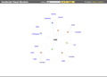
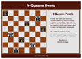
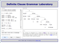

Demonstrations.
Here we put on display small examples demonstrating potential uses of SWAPP. Applications such as these are easy to build.
|
WordNet Tabling Represents WordNet data in RDF and uses Prolog and client-side JavaScript to generate and display table pages of word info. |
WordNet Search Autocomplete search of WordNet combined with hypertext traversal along its synonym, hyperonym and hyponym axes. |
||
|  |
Visual WordNet Represents WordNet data in RDF and uses Prolog and client-side JavaScript to generate and display an animated word graph. |
WordNet Haiku Poetry This app uses heuristics on the server to construct random haiku poems from WordNet. Allows you to store the ones you like. |
|
|
SWI-Prolog Online Have we reimplemented SWI-Prolog in JavaScript? Well, not quite, but we have indeed tried to make it appear like we have! |
 |
N-Queens Solver A really classical Prolog example. Here also with the option of using a much more efficient clp(FD) solving method. |
|
|  |
DCG Laboratory Implements a subset of DCG that allows you to explore the relation between grammars, strings and parse trees. |
Toy Expert System With rules interpreted by “meta-interpreter”. Also featuring query-the-user actions triggered by “server-pushed” events. |
|
|
SWIftChat and Eliza Uses Comet style “server pushing” of events to implement a neat chat system. Lonely in the room? Chat with Eliza! |
Source code for the above examples, as well as for some even simpler examples, are available in the examples directory.